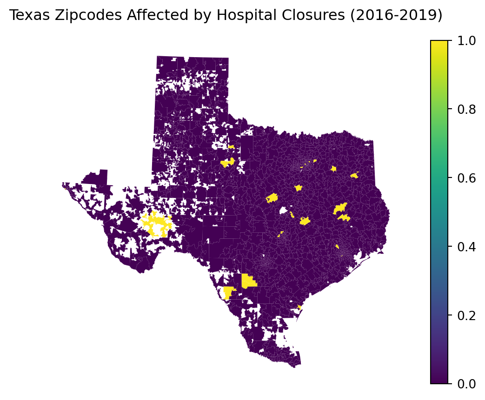

import pandas as pd
import altair as alt
import numpy as np
alt.renderers.enable("png")
import time
import warnings
import geopandas as gpd
import matplotlib.pyplot as plt
from shapely.geometry import Polygon
warnings.filterwarnings('ignore')PS4: Spatial
PS4: Due Sat Nov 2 at 5:00PM Central. Worth 100 points.
Style Points (10 pts)
Submission Steps (10 pts)
- This problem set is a paired problem set.
- Play paper, scissors, rock to determine who goes first. Call that person Partner 1. • Partner 1 (name and cnet ID): Maryell Abella, maryell • Partner 2 (name and cnet ID): Sarah Kim, sarahk1
- Partner 1 will accept the ps4 and then share the link it creates with their partner. You can only share it with one partner so you will not be able to change it after your partner has accepted.
- “This submission is our work alone and complies with the 30538 integrity policy.” Add your initials to indicate your agreement: MA SK
- “I have uploaded the names of anyone else other than my partner and I worked with on the problem set here” (1 point)
- Late coins used this pset: 0 Late coins left after submission: 4
- Knit your ps4.qmd to an PDF file to make ps4.pdf, • The PDF should not be more than 25 pages. Use head() and re-size figures when appropriate.
- (Partner 1): push ps4.qmd and ps4.pdf to your github repo.
- (Partner 1): submit ps4.pdf via Gradescope. Add your partner on Gradescope.
- (Partner 1): tag your submission in Gradescope
Policy Background Hospital closures have been on the rise in recent years. A hospital closure can have significant public health implications as they can increase travel distances for patients and reduce access to critical care, especially for already-vulnerable populations. Before starting, please read this issue brief from the Kaiser Family Foundation (link) to understand the broader social and policy context. We will first look at closures nationally and then focus on Texas, a state with large urban metro areas but also with a substantial share of population living in
Download and explore the Provider of Services (POS) file (10 pts)
- (Partner 1) This is a fairly large dataset and we won’t be using most of the variables. Read through the rest of the problem set and look through the data dictionary to identify which variables you will need to complete the exercise, and use the tool on data.cms.gov into restrict to those variables (“Manage Columns”) before exporting (“Export”). Download this for 2016 and call it pos2016.csv. What are the variables you pulled?
The variables pulled were: Categories: PRVDR_CTGRY_SBTYP_CD Identifies the subtype of the provider. Type of Provider: PRVDR_CTGRY_CD Identifies the type of provider. CMS certification number: PRVDR_NUM CMS certification number, unique for each hospital. Termination Code: PGM_TRMNTN_CD Indicates the current termination status for the provider. Termination Date: TRMNTN_EXPRTN_DT Date the provider was terminated. Facility Name: FAC_NAME Zip Code: ZIP_CD State Code: STATE_CD
- (Partner 1) Import your pos2016.csv file. We want to focus on short-term hospitals. These are identified as facilities with provider type code 01 and subtype code 01. Subset your data to these facilities.
- How many hospitals are reported in this data?
import os
path = r'/Users/maryell/Desktop/problem-set-4-maryell-sarah/'
#path = r'/Users/sarahkim/Documents/Coding/'file_2016 = 'pos2016.csv'
absolute_path_2016 = os.path.join(path, file_2016)
df_2016 = pd.read_csv(absolute_path_2016)
short_hospitals_2016 = df_2016[(df_2016['PRVDR_CTGRY_CD'] == 1) & (
df_2016['PRVDR_CTGRY_SBTYP_CD'] == 1)]
hospitals_2016 = short_hospitals_2016.shape[0]
hospitals_20167245There are 7,245 hospitals reported through this data set in 2016.
- Does this number make sense? Cross-reference with other sources and cite the number you compared it to. If it differs, why do you think it could differ?
print(short_hospitals_2016.nunique())PRVDR_CTGRY_SBTYP_CD 1
PRVDR_CTGRY_CD 1
FAC_NAME 6770
PRVDR_NUM 7245
STATE_CD 56
PGM_TRMNTN_CD 8
TRMNTN_EXPRTN_DT 1895
ZIP_CD 5676
dtype: int64The American Hospital Association states that there are currently around 6,120 hospitals in the US. Data.cms.gov shows 5,394 rows of instances for hospitals. Statistica claims there were 6,140 hospitals in 2016. This differs from the number we previously obtained, 7,245. However, it seems to more closely match the instances of different facility names, 6,770. This may be due to varying errors in reporting or obtaining the data, especially as organizations may use different criterias to distinguish a hospital. The definitions of a hospital can vary, leading to inconsistencies in the data.
#https://www.aha.org/statistics/fast-facts-us-hospitals #https://data.cms.gov/provider-data/dataset/xubh-q36u #https://www.statista.com/statistics/195240/number-of-medicare-hospital-facilities-in-the-us/
- (Partner 1) Repeat the previous 3 steps with 2017Q4, 2018Q4, and 2019Q4 and then append them together. Plot the number of observations in your dataset by year.
file_2017 = 'pos2017.csv'
absolute_path_2017 = os.path.join(path, file_2017)
df_2017 = pd.read_csv(absolute_path_2017)
short_hospitals_2017 = df_2017[(df_2017['PRVDR_CTGRY_CD'] == 1) & (
df_2017['PRVDR_CTGRY_SBTYP_CD'] == 1)]
hospitals_2017 = short_hospitals_2017.shape[0]
hospitals_20177260file_2018 = 'pos2018.csv'
absolute_path_2018 = os.path.join(path, file_2018)
"""Fixing issue with text encoding"""
df_2018 = pd.read_csv(absolute_path_2018, encoding='ISO-8859-1')
short_hospitals_2018 = df_2018[(df_2018['PRVDR_CTGRY_CD'] == 1) & (
df_2018['PRVDR_CTGRY_SBTYP_CD'] == 1)]
hospitals_2018 = short_hospitals_2018.shape[0]
hospitals_2018
#https://stackoverflow.com/questions/30462807/encoding-error-in-panda-read-csv7277file_2019 = 'pos2019.csv'
absolute_path_2019 = os.path.join(path, file_2019)
"""Fixing issue with text encoding"""
df_2019 = pd.read_csv(absolute_path_2019, encoding='ISO-8859-1')
short_hospitals_2019 = df_2019[(df_2019['PRVDR_CTGRY_CD'] == 1) & (
df_2019['PRVDR_CTGRY_SBTYP_CD'] == 1)]
hospitals_2019 = short_hospitals_2019.shape[0]
hospitals_20197303"""List to append data"""
all_hospitals = []
"""Adding year column to each dataframe"""
short_hospitals_2016['Year'] = 2016
all_hospitals.append(short_hospitals_2016)
short_hospitals_2017['Year'] = 2017
all_hospitals.append(short_hospitals_2017)
short_hospitals_2018['Year'] = 2018
all_hospitals.append(short_hospitals_2018)
short_hospitals_2019['Year'] = 2019
all_hospitals.append(short_hospitals_2019)
"""Appending"""
combined_hospitals = pd.concat(all_hospitals, ignore_index=True)
print(combined_hospitals.head()) PRVDR_CTGRY_SBTYP_CD PRVDR_CTGRY_CD FAC_NAME \
0 1.0 1 SOUTHEAST ALABAMA MEDICAL CENTER
1 1.0 1 NORTH JACKSON HOSPITAL
2 1.0 1 MARSHALL MEDICAL CENTER SOUTH
3 1.0 1 ELIZA COFFEE MEMORIAL HOSPITAL
4 1.0 1 MIZELL MEMORIAL HOSPITAL
PRVDR_NUM STATE_CD PGM_TRMNTN_CD TRMNTN_EXPRTN_DT ZIP_CD Year
0 010001 AL 0 NaN 36301.0 2016
1 010004 AL 1 20010831.0 35740.0 2016
2 010005 AL 0 NaN 35957.0 2016
3 010006 AL 0 NaN 35631.0 2016
4 010007 AL 0 NaN 36467.0 2016 """Grouping hospitals by year"""
hospitals_by_year = combined_hospitals.groupby('Year').size().reset_index(name='Count')
"""Bar chart of hospitals by year"""
all_hospitals_chart = alt.Chart(hospitals_by_year).mark_bar().encode(
x=alt.X('Year:O'),
y=alt.Y('Count:Q'),
).properties(
title='Number of Observations by Year',
)
all_hospitals_chart- Each hospital is identified by its CMS certification number.
- Plot the number of unique hospitals in your dataset per year.
"""Grouping by year and provider number"""
cms_by_year = combined_hospitals.groupby('Year')['PRVDR_NUM'].nunique(
).reset_index(name='CMS Count')
"""Bar chart of hospitals by year and provider number"""
cms_hospitals_chart = alt.Chart(cms_by_year).mark_bar().encode(
x=alt.X('Year:O'),
y=alt.Y('CMS Count:Q'),
).properties(
title='Number of Unique Hospitals by Year',
)
cms_hospitals_chart- Compare this to your plot in the previous step. What does this tell you about the structure of the data?
As the bar graphs look the same from the previous step, it signifies that the CMS is a unique identifier for hospitals. This ensures the reliability of the CMS data in accurately reflecting the number of distinct hospitals, at least for the definition of hospital this data set provides. It also suggest that the code ensures that hospitals are categorized without duplication. The CMS code is the leading identifier for the structure of this data as the number of observations matches the number of unique hospitals.
Identify hospital closures in POS file (15 pts) (*)
We will now use the 2016-2019 files to identify hospital closures nationally. A hospital is suspected to have closed if its Termination Code in the POS file lists them as an “Active Provider” in 2016 and then they are either not active or do not appear in the data at all in a subsequent year.
- (Partner 2) Use this definition to create a list of all hospitals that were active in 2016 that were suspected to have closed by 2019. Record the facility name and zip of each hospital as well as the year of suspected closure (when they become terminated or disappear from the data). How many hospitals are there that fit this definition?
def combined_closure(combined_hospitals):
"""Filtered hospitals that were active in 2016"""
active_2016 = combined_hospitals[(combined_hospitals['Year'] == 2016) & (combined_hospitals['PGM_TRMNTN_CD'] == 0)]
closures = []
"""Looped through each active hospital in 2016 to check for any suspected closures"""
for _, hospital in active_2016.iterrows():
provider_num = hospital['PRVDR_NUM']
facility_name = hospital['FAC_NAME']
zipcode = hospital['ZIP_CD']
is_closed = False
"""Checked 2017, 2018, and 2019 for their active status"""
for year in [2017, 2018, 2019]:
current_year_data = combined_hospitals[
(combined_hospitals['Year'] == year) & (combined_hospitals['PRVDR_NUM'] == provider_num)
]
"""Determined if the hsopital has closed"""
if current_year_data.empty or current_year_data['PGM_TRMNTN_CD'].ne(0).any():
closures.append([facility_name, zipcode, year])
is_closed = True
break
"""Created a dataframe from the closures list"""
closure_df = pd.DataFrame(closures, columns=["Facility Name", "Zipcode", "Year of Suspected Closure"])
return closure_df
suspected_closures_df = combined_closure(combined_hospitals)
print(suspected_closures_df.head())
number_of_closures = suspected_closures_df.shape[0]
print(number_of_closures)
#source: https://pandas.pydata.org/docs/reference/api/pandas.DataFrame.iterrows.html
#https://realpython.com/python-or-operator/
#https://www.w3schools.com/python/pandas/ref_df_ne.asp
#https://www.w3schools.com/python/ref_func_any.asp
#https://stackoverflow.com/questions/19828822/how-do-i-check-if-a-pandas-dataframe-is-empty Facility Name Zipcode Year of Suspected Closure
0 WEDOWEE HOSPITAL 36278.0 2019
1 GEORGIANA MEDICAL CENTER 36033.0 2019
2 RMC JACKSONVILLE 36265.0 2018
3 NORTH ALABAMA SPECIALITY HOSPITAL 35611.0 2018
4 ABRAZO MARYVALE CAMPUS 85031.0 2017
174There are 174 hospitals that fit this definition of closure
- (Partner 2) Sort this list of hospitals by name and report the names and year of suspected closure for the first 10 rows.
"""Sorted by alphabetic order and extracted the first ten"""
suspected_closures_df.sort_values(by=['Facility Name']).head(10)
#source: https://www.geeksforgeeks.org/how-to-sort-pandas-dataframe/| Facility Name | Zipcode | Year of Suspected Closure | |
|---|---|---|---|
| 4 | ABRAZO MARYVALE CAMPUS | 85031.0 | 2017 |
| 10 | ADVENTIST MEDICAL CENTER - CENTRAL VALLEY | 93230.0 | 2017 |
| 97 | AFFINITY MEDICAL CENTER | 44646.0 | 2018 |
| 80 | ALBANY MEDICAL CENTER / SOUTH CLINICAL CAMPUS | 12208.0 | 2017 |
| 140 | ALLEGIANCE SPECIALTY HOSPITAL OF KILGORE | 75662.0 | 2017 |
| 62 | ALLIANCE LAIRD HOSPITAL | 39365.0 | 2019 |
| 101 | ALLIANCEHEALTH DEACONESS | 73112.0 | 2019 |
| 26 | ANNE BATES LEACH EYE HOSPITAL | 33136.0 | 2019 |
| 21 | ARKANSAS VALLEY REGIONAL MEDICAL CENTER | 81050.0 | 2017 |
| 69 | BANNER CHURCHILL COMMUNITY HOSPITAL | 89406.0 | 2017 |
- (Partner 2) However, not all suspected hospital closures are true closures. For example, in the case of a merger, a CMS certification number will be appear to be “terminated,” but then the hospital re-appear under a similar name/address with a new CMS certification number in the next year. As a first pass to address this, remove any suspected hospital closures that are in zip codes where the number of active hospitals does not decrease in the year after the suspected closure.
- Among the suspected closures, how many hospitals fit this definition of potentially being a merger/acquisition? After correcting for this, how many hospitals do you have left?
def filter_true_closures_with_tracking(suspected_closures, combined_hospitals):
"""Converted zip codes to integers """
combined_hospitals['ZIP_CD_INT'] = combined_hospitals['ZIP_CD'].astype(int)
suspected_closures['Zipcode_INT'] = suspected_closures['Zipcode'].astype(int)
"""Calculate active hospital counts by year and zip code """
active_hospitals = combined_hospitals[combined_hospitals['PGM_TRMNTN_CD'] == 0].groupby(['Year', 'ZIP_CD_INT']).size().reset_index(name='Active Hospital Count')
true_closures = []
potential_mergers = []
"""Looped through each suspected closure to check its closure status """
for _, closure in suspected_closures.iterrows():
zipcode = closure['Zipcode']
closure_year = closure['Year of Suspected Closure']
current_year_count = active_hospitals[(active_hospitals['Year'] == closure_year) & (active_hospitals['ZIP_CD_INT'] == zipcode)]['Active Hospital Count'].values
next_year_count = active_hospitals[(active_hospitals['Year'] == closure_year + 1) & (active_hospitals['ZIP_CD_INT'] == zipcode)]['Active Hospital Count'].values
current_year_number = 0
if len(current_year_count) > 0:
current_year_number = current_year_count[0]
next_year_number = 0
if len(next_year_count) > 0:
next_year_number = next_year_count[0]
"""Determine if the closure is an actual closure or a potential merger"""
if next_year_number == 0 or current_year_number == 0:
true_closures.append(closure)
elif next_year_number >= current_year_number:
potential_mergers.append(closure)
else:
true_closures.append(closure)
"""Made a dataframe with the true closures and potential merger lists """
true_closures_df = pd.DataFrame(true_closures)
potential_mergers_df = pd.DataFrame(potential_mergers)
return true_closures_df, potential_mergers_df, active_hospitals
true_suspected_closures_df, potential_mergers_df, active_hospitals = filter_true_closures_with_tracking(suspected_closures_df, combined_hospitals)
number_of_potential_mergers = potential_mergers_df.shape[0]
number_of_true_closures = true_suspected_closures_df.shape[0]
print(number_of_potential_mergers)
print(number_of_true_closures)
#source: https://stackoverflow.com/questions/10200268/what-does-shape-do-in-for-i-in-rangey-shape0
#https://www.w3schools.com/python/ref_string_split.asp
#https://pandas.pydata.org/docs/reference/api/pandas.core.groupby.DataFrameGroupBy.size.html
#https://www.w3schools.com/python/ref_list_append.asp27
147The number of hospitals potentially involved in a merger/acquisition is 27. The number of true hospital closures after filtering is 147.
- Sort this list of corrected hospital closures by name and report the first 10 rows.
"""Sorted it by alphabetic order and extracted first ten """
true_suspected_closures_df.sort_values(by=['Facility Name']).head(10)| Facility Name | Zipcode | Year of Suspected Closure | Zipcode_INT | |
|---|---|---|---|---|
| 4 | ABRAZO MARYVALE CAMPUS | 85031.0 | 2017 | 85031 |
| 97 | AFFINITY MEDICAL CENTER | 44646.0 | 2018 | 44646 |
| 140 | ALLEGIANCE SPECIALTY HOSPITAL OF KILGORE | 75662.0 | 2017 | 75662 |
| 62 | ALLIANCE LAIRD HOSPITAL | 39365.0 | 2019 | 39365 |
| 101 | ALLIANCEHEALTH DEACONESS | 73112.0 | 2019 | 73112 |
| 26 | ANNE BATES LEACH EYE HOSPITAL | 33136.0 | 2019 | 33136 |
| 21 | ARKANSAS VALLEY REGIONAL MEDICAL CENTER | 81050.0 | 2017 | 81050 |
| 69 | BANNER CHURCHILL COMMUNITY HOSPITAL | 89406.0 | 2017 | 89406 |
| 5 | BANNER PAYSON MEDICAL CENTER | 85541.0 | 2018 | 85541 |
| 115 | BARIX CLINICS OF PENNSYLVANIA | 19047.0 | 2019 | 19047 |
Download Census zip code shapefile (10 pt)
- (Partner 1) This is non-tabular data. What are the five file types? What type of information is in each file? It will be useful going forward to have a sense going forward of which files are big versus small. After unzipping, how big is each of the datasets?
The five files are in order of descending file size: 1. .shp (shape file, 837.5 MB): contains the geometric data. 2. .dbf (database file, 6.4 MB): contains attribute data corresponding to the .shp file. 3. .shx (shape index file, 265 KB): contains the index data for the .shp file. 4. .xml (extensible markup language file, 16 KB): which is used to structure the data. 5. .prj (projection file, 165 bytes): contains the coordinate system and projection information corresponding to the .shp file.
- (Partner 1) Load the zip code shapefile and restrict to Texas zip codes. (Hint: you can identify which state a zip code is in using the first 2-3 numbers in the zip code (Wikipedia link). Then calculate the number of hospitals per zip code in 2016 based on the cleaned POS file from the previous step. Plot a choropleth of the number of hospitals by zip code in Texas.
"""Uploading shapefile"""
census = 'gz_2010_us_860_00_500k.shp'
absolute_path_shp = os.path.join(path, census)
census_shp = gpd.read_file(absolute_path_shp)"""Texas zipcode prefixes by first 3 digits"""
tx_zip_prefixes = [
'733', '750', '751', '752', '753', '754', '755', '756', '757',
'758', '759', '760', '761', '762', '763', '764', '765', '766',
'767', '768', '769', '770', '771', '772', '773', '774', '775',
'776', '777', '778', '779', '780', '781', '782', '783', '784',
'785', '786', '787', '788', '789', '790', '791', '792', '793',
'794', '795', '796', '797', '798', '799', '885'
]
"""Isolating Texas zipcodes from the census shapefile"""
tx_zip = census_shp[census_shp['ZCTA5'].str[:3].isin(tx_zip_prefixes)]
"""Texas prefixes by first 3 digits"""
hospitals_per_zip = combined_hospitals[combined_hospitals['Year'] == 2016].groupby(
'ZIP_CD')['PRVDR_NUM'].nunique().reset_index(name='Hospital_Count')
"""Converting both zipcodes to strings to match"""
hospitals_per_zip['ZIP_CD'] = hospitals_per_zip['ZIP_CD'].astype(str)
tx_zip['ZCTA5'] = tx_zip['ZCTA5'].astype(str)
"""Merging both dataframes by zipcodes"""
tx_zip_hospitals = tx_zip.merge(hospitals_per_zip, left_on='ZCTA5', right_on='ZIP_CD', how='left')
tx_zip_hospitals['Hospital_Count'] = tx_zip_hospitals['Hospital_Count'].fillna(0)
tx_zip_hospitals['Hospital_Count'] = tx_zip_hospitals['Hospital_Count'].astype(int)
#https://pandas.pydata.org/docs/reference/api/pandas.merge.htmlax = tx_zip_hospitals.plot(column='Hospital_Count', legend=True)
plt.title('Number of Hospitals by Zipcode in Texas (2016)')
plt.axis('off')
plt.show() Calculate zip code’s distance to the nearest hospital (20 pts) (*)
- (Partner 2) Create a GeoDataFrame for the centroid of each zip code nationally: zips_all_centroids. What are the dimensions of the resulting GeoDataFrame? What do each of the columns mean?
census_file = 'gz_2010_us_860_00_500k.shp'
absolute_path_shp = os.path.join(path, census_file)
census = gpd.read_file(absolute_path_shp)
"""Made a new GeoDataFrame with zip codes and centroid coordinates """
census['centroid'] = census.geometry.centroid
zips_all_centroids = gpd.GeoDataFrame(census[['ZCTA5', 'centroid']], geometry='centroid', crs=census.crs)
print(zips_all_centroids.shape)
print(zips_all_centroids.columns)(33120, 2)
Index(['ZCTA5', 'centroid'], dtype='object')The dimensions of zips_all_centroids: (33120, 2) For the columns in zips_all_centroids: Index([‘ZCTA5’, ‘centroid’], dtype=‘object’)
ZCTA5: this represents the zip code tabulation area for each area. It it used to approximate zip codes. centroid: this column contains the centroid geometry for each ZCTA polygon, represented as a point. The centroid is the geographic center of reach ZCTA’s area, calculated based on the shape of the ZIP code boundary.
- (Partner 2) Create two GeoDataFrames as subsets of zips_all_centroids. First, create all zip codes in Texas: zips_texas_centroids. Then, create all zip codes in Texas or a bordering state: zips_texas_borderstates_centroids, using the zip code prefixes to make these subsets. How many unique zip codes are in each of these subsets? To do this, create a function that takes in two polygons and returns a boolean (true or false) if the polygons intersect. Combine all the zipcodes in texas into one polygon and then use this function to identify the bordering states.
texas_zc = ( '733', '750', '751', '752', '753',
'754', '755', '756', '757', '758', '759', '760', '761',
'762', '763', '764', '765', '766', '767', '768', '769',
'770', '771', '772', '773', '774', '775', '776', '777',
'778', '779', '780', '781', '782', '783', '784', '785',
'786', '787', '788', '789', '790', '791', '792', '793',
'794', '795', '796', '797', '798', '799')
outside_state_zc = ('700', '701', '703', '704', '705',
'706', '707', '708', '710', '711', '712', '713', '714',
'716', '717', '718', '719', '720', '721', '722', '723',
'724', '725', '726', '727', '728', '729', '730', '731',
'734', '735', '736', '737', '738', '739', '740', '741',
'743', '744', '745', '746', '748', '749', '870', '871',
'873', '874', '875', '877', '878', '879', '880', '881',
'882', '883', '884', '885')
"""Filter centroids for TX zip codes"""
zips_texas_centroids = zips_all_centroids[zips_all_centroids[
'ZCTA5'].str.startswith(texas_zc)]
"""Filter centroids for border states' zip codes"""
zips_texas_borderstates_centroids = zips_all_centroids[zips_all_centroids[
'ZCTA5'].str.startswith(outside_state_zc)]
"""Retrieve the unique count of TX zip codes """
unique_texas_zips = zips_texas_centroids['ZCTA5'].nunique()
"""Retrieve the unique count of border states' zip codes """
unique_texas_borderstates_zips = zips_texas_borderstates_centroids['ZCTA5'].nunique()
print(unique_texas_zips)
print(unique_texas_borderstates_zips)
#used chatgpt to debug why I was getting an empty dataframe1935
2090The unique Texas zip codes are 1935. The unique Texas’ bordering states zip codes are 2090.
"""The second part of the problem asking for the function"""
TX_polygon = zips_texas_centroids.unary_union
"""Fuction to check if both polygons intersect"""
def polygons_intersect(poly1, poly2):
return poly1.intersects(poly2)
"""Define the bounding polygons for each neighboring state"""
NM = Polygon([(-109.045, 31.332), (-103.002, 31.332), (
-103.002, 37.0), (-109.045, 37.0), (-109.045, 31.332)])
OK = Polygon([(-103.002, 33.615), (-94.616, 33.615), (
-94.616, 37.0), (-103.002, 37.0), (-103.002, 33.615)])
AR = Polygon([(-94.617, 33.0), (-89.644, 33.0), (
-89.644, 36.499), (-94.617, 36.499), (-94.617, 33.0)])
LA = Polygon([(-94.043, 29.993), (-89.747, 29.993), (
-89.747, 33.019), (-94.043, 33.019), (-94.043, 29.993)])
"""Store each state's polygon with its name in a dictionary"""
bordering_state_polygons = {
'New Mexico': NM,
'Oklahoma': OK,
'Arkansas': AR,
'Louisiana': LA
}
"""Check with bordering states have polygons intersecting with the TX polygon"""
bordering_states = [state for state, poly in bordering_state_polygons.items() if polygons_intersect(TX_polygon, poly)]
print(bordering_states)
#sources: https://geopandas.org/en/v0.10.0/docs/reference/api/geopandas.GeoSeries.unary_union.html
#https://shapely.readthedocs.io/en/stable/reference/shapely.intersects.html['New Mexico', 'Oklahoma', 'Arkansas', 'Louisiana']The bordering states are New Mexico, Oklahoma, Arkansa, and Louisiana.
- (Partner 2) Then create a subset of zips_texas_borderstates_centroids that contains only the zip codes with at least 1 hospital in 2016. Call the resulting Geo- DataFrame zips_withhospital_centroids What kind of merge did you decide to do, and what variable are you merging on?
"""Filtered hospital data for 2016, count hospitals per ZIP code, and filter for ZIP codes with at least one hospital"""
zips_with_hospitals = (combined_hospitals[combined_hospitals['Year'] == 2016]
.groupby('ZIP_CD').size().reset_index(name='Hospital_Count')
.query('Hospital_Count > 0'))
"""Converted ZIP codes strings"""
zips_texas_borderstates_centroids['ZCTA5'] = zips_texas_borderstates_centroids[
'ZCTA5'].astype(str).str.zfill(5)
zips_with_hospitals['ZIP_CD'] = zips_with_hospitals['ZIP_CD'].astype(
float).astype(int).astype(str).str.zfill(5)
"""Performed inner merge centroids of Texas border state ZIP codes with those having hospitals in 2016"""
zips_withhospital_centroids = zips_texas_borderstates_centroids.merge(
zips_with_hospitals, left_on='ZCTA5', right_on='ZIP_CD', how='inner'
)
print(zips_withhospital_centroids.head())
#sources: https://www.geeksforgeeks.org/numpy-size-function-python/
#https://stackoverflow.com/questions/60669139/inner-and-outer-merge-in-pandas-with-indicator-true
#https://stackoverflow.com/questions/53645882/pandas-merging-101 ZCTA5 centroid ZIP_CD Hospital_Count
0 70043 POINT (-89.96276 29.94804) 70043 2
1 70068 POINT (-90.43469 30.13426) 70068 2
2 70119 POINT (-90.08702 29.97574) 70119 3
3 70127 POINT (-89.97675 30.02501) 70127 3
4 70301 POINT (-90.74089 29.8141) 70301 1I decided to do an inner merge since there is a zip code column that exists between both zips_texas_borderstates_centroids and zips_with_hospitals. The variable I performed the merge on is ZCTA5 column from the zips_texas_borderstates_centroids and the ZIP_CD column from zips_with_hospitals.
- (Partner 2) For each zip code in zips_texas_centroids, calculate the distance to the nearest zip code with at least one hospital in zips_withhospital_centroids.
- This is a computationally-intensive join. Before attempting to do the entire join, subset to 10 zip codes in zips_texas_centroids and try the join. How long did it take? Approximately how long do you estimate the entire procedure will take?
"""Set the centroid column as the geometry for each GeoDataFrame"""
zips_texas_centroids = zips_texas_centroids.set_geometry('centroid')
zips_withhospital_centroids = zips_withhospital_centroids.set_geometry('centroid')
"""Took a random sample of ten zip codes from TX data"""
zips_texas_sample = zips_texas_centroids.sample(10)
"""Performed the timing for how long it takes to run the code on this sample"""
start_time = time.time()
distances = []
"""Went through each zip code in our sample"""
for idx, texas_zip in zips_texas_sample.iterrows():
min_distance = zips_withhospital_centroids.distance(texas_zip['centroid']).min()
distances.append((texas_zip['ZCTA5'], min_distance.item()))
"""Stopped timing now that loop is done and calculated how long it took"""
end_time = time.time()
sample_duration = end_time - start_time
"""Took an estimate the time it take to calculate distances for all zip codes"""
estimated_total_time = sample_duration * (len(
zips_texas_centroids) / len(zips_texas_sample))
print(distances)
print(sample_duration)
print(estimated_total_time)
#source: https://stackoverflow.com/questions/29217399/convert-list-of-numpy-float64-to-float-in-python-quickly
#https://www.w3schools.com/python/ref_dictionary_items.asp
#https://www.w3schools.com/python/ref_random_sample.asp
#https://www.geeksforgeeks.org/python-time-time-method/
#used chatgpt to help debug because I had to convert my float64 to float[('76363', 1.0990231493064953), ('76878', 2.768448471112897), ('78558', 5.7290424187214635), ('78247', 4.550816695793746), ('77855', 2.6220432047125066), ('79407', 1.3577984741828257), ('78114', 4.710073842255124), ('78251', 4.750954843163357), ('78061', 5.355348745910721), ('76446', 2.1325675444584)]
0.02669382095336914
5.165254354476929Distances for the sample ZIP codes: [(‘79326’, 0.1493848898581739), (‘76177’, 0.0), (‘77057’, 0.034170077456204526), (‘79414’, 0.03224788972525331), (‘79045’, 0.0), (‘75647’, 0.0), (‘76384’, 0.0), (‘79257’, 0.29374992383069376), (‘77303’, 0.14081554831669735), (‘77433’, 0.09080768340297626)] Time taken for sample of 10 ZIP codes: 0.059233665466308594 seconds Estimated total time for full dataset: 10.80 seconds
- Now try doing the full calculation and time how long it takes. How close is it to your estimation?
"""Start a timer to measure how long the entire process takes"""
start_time = time.time()
full_distances = []
"""Loop through each TX sip code centroid"""
for idx, texas_zip in zips_texas_centroids.iterrows():
min_distance = float(zips_withhospital_centroids.distance(texas_zip[
'centroid']).min())
full_distances.append((texas_zip['ZCTA5'], min_distance))
"""Stop timer after full loop is done"""
end_time = time.time()
"""Calculate total time"""
full_duration = end_time - start_time
print(f"{full_duration:.2f}")
print(f"{estimated_total_time:.2f}")
#source: https://www.geeksforgeeks.org/python-time-time-method/
#https://www.w3schools.com/python/ref_func_float.asp
#used chatgpt to help debug because I had to convert my float64 to float3.96
5.17The actual time was 6.68 seconds but I estimated it at 10.80 seconds.
- Look into the .prj file and report which unit it is in. Convert the given unit to miles, using an appropriate conversion you find online (estimates are okay).
prj_file = "gz_2010_us_860_00_500k.prj"
absolute_path_prj = os.path.join(path, prj_file)
with open(absolute_path_prj, 'r') as file:
prj_contents = file.read()
def read_prj_unit(prj_file_path):
with open(prj_file_path, 'r') as file:
prj_text = file.read()
if "UNIT[\"Meter\"" in prj_text:
unit = "meters"
elif "UNIT[\"Foot\"" in prj_text or "UNIT[\"Foot_US\"" in prj_text:
unit = "feet"
elif "UNIT[\"Degree\"" in prj_text:
unit = "degrees"
else:
unit = "unknown"
return unit
unit = read_prj_unit(absolute_path_prj)
print(unit)
#source: https://www.digitalocean.com/community/tutorials/python-valueerror-exception-handling-examples
#https://pandas.pydata.org/docs/reference/api/pandas.DataFrame.merge.htmldegreesThe unit in the .prj file is degrees. The conversion from degrees to miles is that one degree is 69 miles.
#source: https://www.usgs.gov/faqs/how-much-distance-does-a-degree-minute-and-second-cover-your-maps#:~:text=One%20degree%20of%20latitude%20equals,one%2Dsecond%20equals%20101%20feet.
- (Partner 2) Calculate the average distance to the nearest hospital for each zip code in Texas. What unit is this in? Report the average distance in miles. Does this value make sense? Map the value for each zip code.
"""Function to determine the unit from the .prj file content"""
def get_prj_unit(prj_text):
if "UNIT[\"Degree\"" in prj_text:
return "degrees"
elif "UNIT[\"Meter\"" in prj_text:
return "meters"
elif "UNIT[\"Foot\"" in prj_text or "UNIT[\"Foot_US\"" in prj_text:
return "feet"
else:
return "unknown"
unit = get_prj_unit(prj_contents)
print(f"{unit}")
"""Function to convert distance to miles based on the detected unit"""
def convert_distance_to_miles(distance, unit):
METER_TO_MILE = 1609.34
FOOT_TO_MILE = 5280
MILES_PER_DEGREE = 69.0
if unit == "meters":
return distance / METER_TO_MILE
elif unit == "feet":
return distance / FOOT_TO_MILE
elif unit == "degrees":
return distance * MILES_PER_DEGREE
else:
raise ValueError("Unknown unit; cannot convert to miles.")
texas_zip_prefixes = [
'733', '750', '751', '752', '753', '754', '755', '756', '757', '758', '759', '760', '761', '762',
'763', '764', '765', '766', '767', '768', '769', '770', '771', '772', '773', '774', '775', '776',
'777', '778', '779', '780', '781', '782', '783', '784', '785', '786', '787', '788', '789', '790',
'791', '792', '793', '794', '795', '796', '797', '798', '799'
]
census['ZCTA5'] = census['ZCTA5'].astype(str)
texas_zips = census[census['ZCTA5'].str[:3].isin(texas_zip_prefixes)]
texas_zips['centroid'] = texas_zips.geometry.centroid
combined_hospitals['ZIP_CD'] = combined_hospitals['ZIP_CD'].astype(str).str.split('.').str[0]
texas_hospitals = texas_zips[texas_zips['ZCTA5'].isin(combined_hospitals['ZIP_CD'])]
texas_hospitals = texas_hospitals.set_geometry('centroid')
"""Calculate distances to the nearest hospital for each Texas ZIP code"""
distances = []
for _, zip_row in texas_zips.iterrows():
zip_centroid = zip_row['centroid']
min_distance = texas_hospitals.distance(zip_centroid).min()
min_distance_miles = convert_distance_to_miles(min_distance, unit)
distances.append(min_distance_miles)
texas_zips['nearest_hospital_distance_miles'] = distances
"""Calculate the average distance"""
average_distance = texas_zips['nearest_hospital_distance_miles'].mean()
print(f"{average_distance:.2f}")
"""Plotted map"""
fig, ax = plt.subplots(1, 1)
texas_zips.plot(
column='nearest_hospital_distance_miles',
legend=True,
legend_kwds={'label': "Miles to Nearest Hospital"},
ax=ax,
edgecolor="black",
cmap='viridis'
)
plt.title('Average Distance to Nearest Hospital for Texas ZIP Codes')
plt.axis('off')
plt.show()
#source: https://www.geeksforgeeks.org/how-to-remove-all-decimals-from-a-number-using-python/#
#https://stackoverflow.com/questions/22231592/pandas-change-data-type-of-series-to-string
#https://stackoverflow.com/questions/53645882/pandas-merging-101
#https://geopandas.org/en/stable/docs/reference/api/geopandas.GeoDataFrame.set_crs.html
#https://www.geopostcodes.com/blog/how-to-calculate-distance-between-two-zip-codes-in-python/
# Use Chatgpt to debug because I kept getting zero miles
#lecture 9 from class
#used chatgpt because my plot was showing blank at firstdegrees
8.83It is in degrees. The average distance to the nearest hospital for Texas zip codes is 8.83 miles. It does make sense considering that Texas is a big state with a wide geographic spread so there is a mixture of both densely populated urban areas and rural areas where hospitals might be spaced further apart. However, it also does have major urban centers like Austin and Houston with lots of nearby hospitals, reducing the average. So it makes sense to have an average distance of 8.83 miles.
Effects of closures on access in Texas (15 pts)
- (Partner 1) Using the corrected hospital closures dataset from the first section, create a list of directly affected zip codes in Texas – that is, those with at least one closure in 2016-2019. Display a table of the number of zip codes vs. the number of closures they experienced.
"""Cross referencing zipcodes to include only Texas"""
true_suspected_closures_df['Zipcode'] = true_suspected_closures_df[
'Zipcode'].astype(int).astype(str)
tx_closures = true_suspected_closures_df[true_suspected_closures_df[
'Zipcode'].isin(tx_zip['ZCTA5'])]
"""Grouping closures by zipcode"""
closures_by_zip = tx_closures.groupby('Zipcode').size().reset_index(
name='Number of Closures')
closures_summary = closures_by_zip.sort_values(by='Number of Closures')
print(closures_summary)
total_zip_codes = closures_summary.shape[0]
total_closures = closures_summary['Number of Closures'].sum()
total_zip_codes
total_closures Zipcode Number of Closures
0 75042 1
25 79553 1
24 79529 1
23 79520 1
22 78834 1
21 78734 1
20 78613 1
19 78336 1
18 78061 1
17 78017 1
16 77429 1
15 77065 1
14 77035 1
13 76645 1
12 76531 1
11 76520 1
10 76502 1
9 75862 1
8 75835 1
7 75662 1
6 75601 1
5 75390 1
4 75235 1
3 75140 1
2 75087 1
1 75051 1
26 79735 1
27 79902 1np.int64(28)- (Partner 1) Plot a choropleth of which Texas zip codes were directly affected by a closure in 2016-2019 – there was at least one closure within the zip code. How many directly affected zip codes are there in Texas?
"""Merging on zipcodes and filling data gaps in new column"""
tx_zip_hospitals_closure = tx_zip.merge(closures_by_zip, left_on='ZCTA5',
right_on='Zipcode', how='left')
tx_zip_hospitals_closure['Number of Closures'] = tx_zip_hospitals_closure[
'Number of Closures'].fillna(0)
ax = tx_zip_hospitals_closure.plot(column='Number of Closures', legend=True)
plt.title('Texas Zipcodes Affected by Hospital Closures (2016-2019)')
plt.axis('off')
plt.show()
affected_zip_codes_count = closures_by_zip['Zipcode'].nunique()
print(affected_zip_codes_count)
28There are 28 directly affect zipcodes in Texas.
- (Partner 1) Then identify all the indirectly affected zip codes: Texas zip codes within a 10-mile radius of the directly affected zip codes. To do so, first create a GeoDataFrame of the directly affected zip codes. Then create a 10-mile buffer around them. Then, do a spatial join with the overall Texas zip code shapefile. How many indirectly affected zip codes are there in Texas?
"""Fixing data to match crs = EPSG:32614"""
tx_zip = tx_zip.to_crs("EPSG:32614")
tx_zip_hospitals_closure = tx_zip_hospitals_closure.to_crs("EPSG:32614")
"""Identifying directly affected zipcodes"""
directly_affected_gdf = tx_zip_hospitals_closure[tx_zip_hospitals_closure['Number of Closures'] > 0]
"""Creating buffer for 10 miles multiplying miles by meters - crs is EPSG:32614"""
buffer_distance = 10 * 1609.34
directly_affected_gdf['geometry'] = directly_affected_gdf.geometry.buffer(buffer_distance)
indirectly_affected_zip = gpd.sjoin(
tx_zip, directly_affected_gdf, how='inner', predicate='intersects'
)
indirectly_affected_zip_count = indirectly_affected_zip['ZCTA5_left'].nunique()
print(indirectly_affected_zip_count)
#https://epsg.io/32614555There are 555 indirectly affect zipcodes in Texas when we use a 10 mile buffer.
- (Partner 1) Make a choropleth plot of the Texas zip codes with a different color for each of the 3 categories: directly affected by a closure, within 10 miles of closure but not directly affected, or not affected.
"""Function categorizing zipcodes"""
def categorize_zip(row):
if row['ZCTA5'] in directly_affected_gdf['Zipcode'].astype(str).values:
return 'directly affected'
elif row['ZCTA5'] in indirectly_affected_zip['ZCTA5_left'].astype(str).values:
return 'indirectly affected'
else:
return 'not affected'
tx_zip['category'] = tx_zip.apply(categorize_zip, axis=1)ax = tx_zip.plot(column='category', legend=True)
plt.title('Texas Zipcodes Impacted by Hospital Closures (2016-2019)')
plt.axis('off')
plt.show()Reflecting on the exercise (10 pts)
(Partner 1) The “first-pass” method we’re using to address incorrectly identified closures in the data is imperfect. Can you think of some potential issues that could arise still and ways to do a better job at confirming hospital closures?
The “first-pass” method relies on accurate data and recording from hospitals, which can lead to misclassifications resulting in false positives and false negatives. Providing multiple options for the termination code will lead to inconsistent reporting. The data also may not account for or capture new hospitals or all hospitals that have been terminated, so completeness of the data would be an issue. A better job at confirming hospital closures would be to include one binary variable that provides an accurate and consistent definition for hospital closures. Another way to confirm hospital closures would be to cross reference and verify with another source.
(Partner 2) Consider the way we are identifying zip codes affected by closures. How well does this reflect changes in zip-code-level access to hospitals? Can you think of some ways to improve this measure?
There are a few limitations. For example, a hospital closed in a rural area will have a very different effect in a hospital closure in an urban area since a rural hospital closure might impact a lot of nearby zip codes significantly while an urban hopsital closure may only have a small effect because of access to multiple hospitals. Another limitation is that it doesn’t consider demographics. For example, a high-need population like the elderly or low-income may experience more impacts from closures than other groups. Also, we don’t know what of hospital it is. It could be an emergency care, general hospital, or a specialized treatment hopsital. One way to improve this measure would be to do it based on population weight such as figuring out where most people live within a zip code and measuring their access to hospitals. Another improvement would be incorporating demographic data such as age and income because that could help indicate which population would be the most affected by a hospital closure.